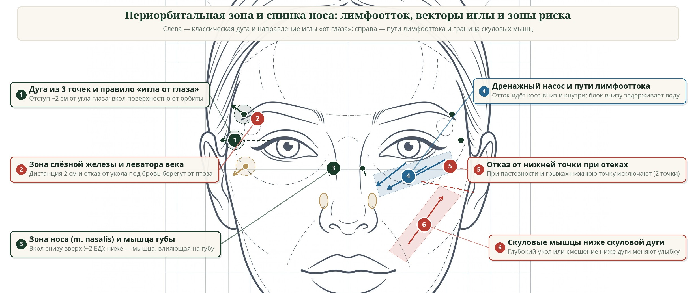

«Гусиные лапки» и зона носа: как не выключить лимфоотток и не изменить улыбку
Зона вокруг глаз и спинка носа — области, где результат ботулинотерапии определяется не только косметикой, но и физиологией: здесь круговая мышца глаза работает как насос для оттока жидкости, а рядом проходят мышцы, управляющие улыбкой. Разбираем, как выбирают точки и когда от части схемы сознательно отказываются.
Коротко о главном
- Круговая мышца глаза — не только «морщины». Она смыкает веки и работает как мышечная помпа для оттока лимфы и венозной крови; её полное выключение в нижнем секторе у склонных к отёкам людей вызывает стойкую пастозность.
- Нижняя точка дуги — не обязательна. При склонности к утренним отёкам, малярным мешкам и грыжам век от нижней точки сознательно отказываются в пользу верхних.
- Опасные анатомические соседи. Рядом лежат мышца, поднимающая верхнее веко, слёзная железа и большая/малая скуловые мышцы: неверная глубина или вектор иглы грозят птозом века, синдромом сухого глаза или асимметрией улыбки.
- Зона носа включается в компенсацию. После расслабления межбровья и глаз нагрузка часто переходит на спинку носа («кроличьи» морщины), а слишком широкая блокада у крыльев носа может удлинить верхнюю губу.
Суть проблемы: анатомия периорбитальной зоны и носа
Круговая мышца глаза: кольцо с дренажной функцией
Круговая мышца глаза (m. orbicularis oculi) — широкая сфинктерная мышца, окружающая глазницу. Её волокна идут концентрическими кольцами, поэтому при зажмуривании и улыбке кожа собирается перпендикулярно волокнам в радиальные складки — «гусиные лапки» у наружного угла глаза.
Функционально разные секторы этой мышцы выполняют разные задачи:
- верхнелатеральная часть опускает хвост брови (работая как депрессор) и смыкает верхнее веко;
- нижняя часть не только участвует в прищуре, но и служит главным «мышечным насосом» периорбитальной зоны: при каждом моргании она проталкивает лимфу и венозную кровь от нижнего века косо вниз и медиально к магистральным лимфатическим коллекторам лица.
Отсюда фундаментальный клинический вывод: выключение нижней порции круговой мышцы глаза у пациента со склонностью к задержке жидкости останавливает дренажный насос и приводит к длительным отёкам под глазами. Это не «аллергия на ботокс», а прямое физиологическое следствие остановки мышечной помпы.

Соседи, которых важно не задеть
Периорбитальная область отличается минимальной толщиной подкожной клетчатки и высокой плотностью функционально важных структур:
- Мышца, поднимающая верхнее веко (m. levator palpebrae superioris) — диффузия препарата при уколе непосредственно под бровь вызывает птоз века;
- Слёзная железа — расположена в верхненаружном углу орбиты; попадание препарата в зону железы снижает выработку слезы и провоцирует сухость глаз;
- Большая и малая скуловые мышцы (mm. zygomaticus major et minor) — начинаются от скуловой кости сразу у нижнего края круговой мышцы глаза и поднимают угол рта при улыбке. Слишком низкий или глубокий укол выключает их, вызывая опущение угла рта и перекос улыбки;
- Сосудистая сеть периорбиты — обилие поверхностных венул и капилляров объясняет, почему здесь требуется ультраповерхностная техника введения.
Спинка носа и эффект мимической компенсации
Диагональные «кроличьи» морщинки на боковых скатах и спинке носа формирует поперечная часть носовой мышцы (m. nasalis). Вплотную к ней вдоль ската носа проходит мышца, поднимающая верхнюю губу и крыло носа (m. levator labii superioris alaeque nasi), которую мы подробно разбирали в материале про носогубную складку и ботокс.
Почему зону носа важно оценивать вместе со лбом и глазами? Когда врач расслабляет межбровный комплекс и круговую мышцу глаза, нерастраченный мимический импульс при улыбке и нахмуривании нередко перебрасывается на соседнюю носовую мышцу — возникает эффект компенсаторной гиперактивности, и на спинке носа начинают закладываться складки, которых раньше пациент не замечал.
Как это работает: логика безопасной схемы
Периорбитальная дуга: 3 точки, 2 точки и осознанный отказ от нижней точки
Точки введения располагают по дуге с отступом около 2 см кнаружи от латерального кантуса (наружного угла глаза) — эта дистанция защищает слёзную железу и мышцы век.
- Классическая схема из 3 точек: центральная точка на уровне угла глаза (в 2 см латеральнее), верхняя — на 1–1,5 см выше по дуге, нижняя — на 1–1,5 см ниже по дуге (около 2 ЕД на точку).
- Облегчённая схема из 2 точек: применяется при умеренных морщинах у пациентов без выраженных заломов снизу.
- Модификация при склонности к отёкам (отказ от нижней точки): пациентам с утренней пастозностью, малярными мешками (суфами) или грыжами нижних век нижнюю точку сознательно не ставят. Врач работает только с верхним и центральным секторами: это позволяет сгладить основные лучики и слегка приподнять хвост брови, полностью сохранив дренажный насос нижнего века.
Также действует табу на прямой укол под хвост брови: верхняя точка стандартной дуги за счёт радиуса диффузии мягко расслабляет верхнелатеральные волокна круговой мышцы (давая лёгкий лифтинг хвоста брови) без риска задеть леватор верхнего века.
Направление иглы: жёсткое правило «от глаза»
При работе вокруг глаз направление иглы и её среза ориентируют строго от глазного яблока — латерально (к виску) или снизу вверх по касательной. Вкол выполняется ультраповерхностно (внутрикожно/подкожно на кончике иглы с формированием микропапулы) на предварительно натянутой коже. Глубокие вколы в этой зоне недопустимы — особенно в нижней точке, где под тонким слоем жира лежат скуловые мышцы, отвечающие за симметрию улыбки.
Спинка носа: живая мимическая проба и глубина вкола
Перед разметкой носа обязательна правильная мимическая проба: врач просит пациента активно «сморщить нос» (и показать это движение), так как абстрактная просьба «сделайте брезгливое лицо» часто включает мышцу, поднимающую верхнюю губу, вместо собственно носовой мышцы.
В отличие от зоны вокруг глаз, на боковых поверхностях спинки носа вкол выполняют глубже — практически до надкостницы (с отступом 1 мм от кости), направляя иглу снизу вверх (~2 ЕД с каждой стороны). Если же требуется дополнительно ослабить тягу мышцы, поднимающей верхнюю губу, у крыла носа работают минимальными дозами и только убедившись, что верхняя губа анатомически не длинная (иначе она визуально удлинится ещё сильнее).
Кому подойдёт, а когда воздержаться
Показания и реалистичный результат
| Клиническая задача | Реалистичный результат |
|---|---|
| Радиальные морщины («гусиные лапки») | Мягкое разглаживание «лучиков» при сохранении живой, естественной улыбки глазами |
| Опущение наружного края брови | Лёгкий физиологический подъём хвоста брови за счёт снятия тяги верхнелатеральной порции круговой мышцы |
| «Кроличьи» морщины на спинке носа | Исчезновение диагональных заломов при смехе и сморщивании носа |
| Компенсаторные складки у внутреннего угла глаза | Предотвращение перегрузки носовой мышцы при комплексной работе с верхней третью |
Противопоказания и анатомические ограничения
- Ограничивают схему вокруг глаз: утренняя пастозность, малярные мешки, грыжи нижних век, лимфостаз, синдром «сухого глаза». В этих случаях исключают нижнюю точку дуги и снижают дозировку.
- Ограничение для зоны носа и крыльев носа: анатомически длинная верхняя губа (большое расстояние от основания носа до красной каймы) — прямое ограничение для выключения мышцы, поднимающей верхнюю губу.
- Не решается ботулинотерапией: истинные жировые грыжи век, избыток дряблой кожи века, тёмные круги сосудистого или пигментного генеза.
Как проходит процедура и восстановление
На приёме и сразу после. Врач оценивает прищур, состояние нижнего века и тонус кожи, проверяет мимику носа. Сама процедура занимает 10–15 минут. Кожа вокруг глаз тонкая и густо оплетена сосудами, поэтому после уколов в течение 1–2 часов видны аккуратные микропапулы, а вероятность мелких точечных синяков (петехий) здесь выше, чем на лбу.
| Период | Рекомендации и ограничения |
|---|---|
| Первые 3–4 часа | Вертикальное положение, не наклоняться и не ложиться лицом в подушку |
| Первые 24 часа | Не тереть глаза, не использовать агрессивный демакияж, отложить массаж и роллеры/гуаша |
| 3–5 дней | Исключить алкоголь, солёную пищу на ночь (профилактика отёков) и тяжёлый спорт |
| 10–14 дней | Исключить баню, сауну, горячие ванны и солярий |
| 14-й день | Контрольный осмотр врача для оценки симметрии прищура и дренажа век |
Частые вопросы пациентов (FAQ)
После уколов вокруг глаз появились утренние отёки. Это навсегда?
Нет, это обратимо. Если была задействована нижняя точка у пациента со скрытой склонностью к лимфостазу, временно снижается «насосная» функция нижнего века. По мере восстановления мышечного тонуса дренаж полностью нормализуется, а при следующих процедурах врач просто исключит нижнюю точку из вашей индивидуальной карты.
Почему врач отказался ставить нижнюю точку под глазом, хотя там есть морщинки при улыбке?
Это признак высокой квалификации и заботы о вас. Если под глазами есть пастозность, малярные мешки или грыжи, сохранение двух лёгких лучиков при широкой улыбке выглядит неизмеримо лучше и моложе, чем гладкое, но постоянно отёчное нижнее веко.
Правда ли, что после ботокса вокруг глаз может появиться сухость?
Такое случается редко — при слишком близком расположении верхней точки к костному краю орбиты и диффузии препарата к слёзной железе. Соблюдение 2-сантиметрового отступа и направление иглы строго «от глаза» сводят этот риск к минимуму.
Уберёт ли ботулинотерапия «мешки» под глазами?
Нет. Если «мешок» образован грыжей орбитального жира или малярным жировым пакетом, расслабление мышцы не уменьшит объём ткани, а за счёт замедления лимфооттока может даже сделать его заметнее. Здесь требуются другие методики.
Почему после коррекции межбровья и глаз я стала сильнее морщить нос?
Это классический эффект мимической компенсации: когда привычные мышцы-депрессоры межбровья расслаблены, мозг перенаправляет часть импульса на соседнюю носовую мышцу. Проблема легко решается добавлением 2 точек (~2 ЕД) на боковые скаты спинки носа на контрольном осмотре.
Материал носит информационно-ознакомительный характер и не заменяет очную консультацию врача-косметолога. Процедуры подбираются индивидуально после диагностики.